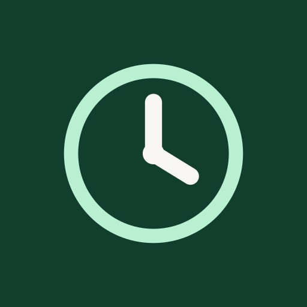

In preparation for Android
Time, without the clutter
Steady Clock
A world clock, stopwatch and timer with large, familiar controls. Compare time zones, record laps and type a countdown in seconds.
Works offline. No ads, accounts or subscriptions. Available in English and Spanish.
